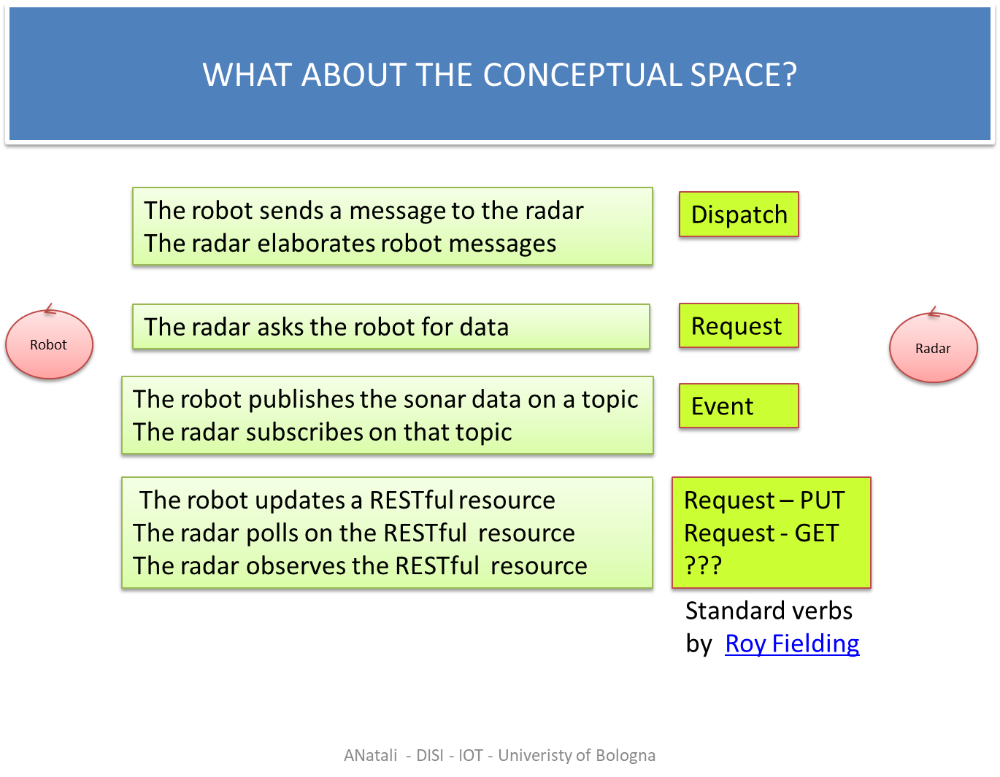

LabSonar_2020 | A robot-radar system
A ddr robot equipped with a HC-SR04 sonar device on its front can be considered as an autonomous agent, able to produce sonar data that can be consumed by some other (remote) agent. In this section, our consumer will be a device able to show to data on a GUI, like the 'radar' made available (as a plain object) by the project it.unibo.java.radar.
The interaction robot-radar
The project it.unibo.java.radar deploys the library radarPojo.jar that provides an object utility to create a radar-GUI and to show values on that GUI: radarSupport.java.In a bottom-up approach, the software designer must find a way to make the radar able to receive the sonar data produced by the robot. Thus the designer must face two problems:
- Find a way to transmit data from the robot to the radar.
- Build a new radar component able to receive data and to display them by using the available radarSupport.java
- The use of a two-way point-to-point communication protocol (e.g. TCP/UDP/etc.).
- The use of a middleware, for example a MQTT broker or a CoAP resource.
 |
 |
In the following, we will base our low-level communication technology on the CoAP RESTful protocol and on the concept of (CoaP)
CoAP-based interaction
Let us start from the basic principles and concepts of interaction among distributed agents related to the Constrained Application Protocol reported in LabCoAP | Introduction to CoAP. it.unibo.raspIntro2020 |
|
Each sonar value is written a the representation V (in base 100<=V<=400).
A simulator of sonar data
The class sonarOnPcSimulate.kt provides a simulator of sonar data that might be useful during software development in absence of a RaspberryPi.This class implements a process that:
- generates a sonar value V by reading an input value from the user-console;
- creates an event EV as an instance of ApplMessage. For example:
msg(sonar,event,sonaronpcsimulated,none,sonar(2,57),2)
- updates the CoAP resource ResourceSonar.java using the operation updateTheResource(String msg) defined in ResourceSonarSupport.java